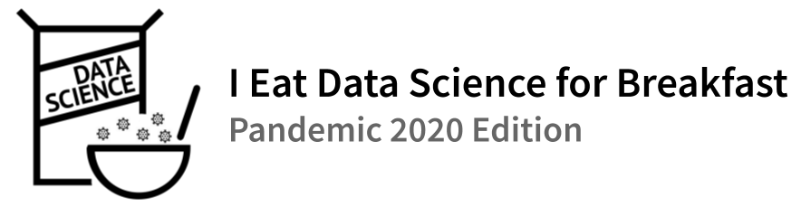

Like many learners in the US (and around the world), Duke students left for Spring Break and were told not to come back. Figuring there is only so much Netflix a person can watch if you do not have small children (with children there is no practical upper bound), I decided to tune up an old workshop called “I Eat Data Science for Breakfast” and offer it via Zoom.
I’m planning to teach the tidyverse and possibly tidymodels over 7-10 weeks. If you’ve had your fill of COVID-19 plots, this is not the workshop for you. I think the best way to teach students about R and data science is by starting with plotting, and as it turns out, the average person is consuming 403 COVID-19 plots per day. At dinner tables all over this land, people are asking, “But shouldn’t these plots be per capita?”, and saying things like, “I think small multiples are a much more effective approach.” Lots of data are being shared, so we’ll plot our way to a better understanding of data wrangling and some modeling.
I’ll host a live session for registered participants every Friday at 9am ET, starting Friday April 3. For the first few weeks I’ll offer a repeat live session the following Wednesday at 9am ET. Registration for the live sessions is limited to Duke-affiliated learners and friends of the program, but I’ll post videos and all materials.
There’s no cost to register or access any materials. All you need to participate is a computer, an internet connection, and an internet browser. When you login to my RStudio Cloud workspace, you’ll be able to open the workshop materials for the week and follow along in the browser. You can also click on the “Content” link in the navbar to download RMarkdown files for each session to run locally on your computer.
— Eric Green, Durham, North Carolina, March 28, 2020
Landing page image credit: Cereal by Chris Markhing from the Noun Project